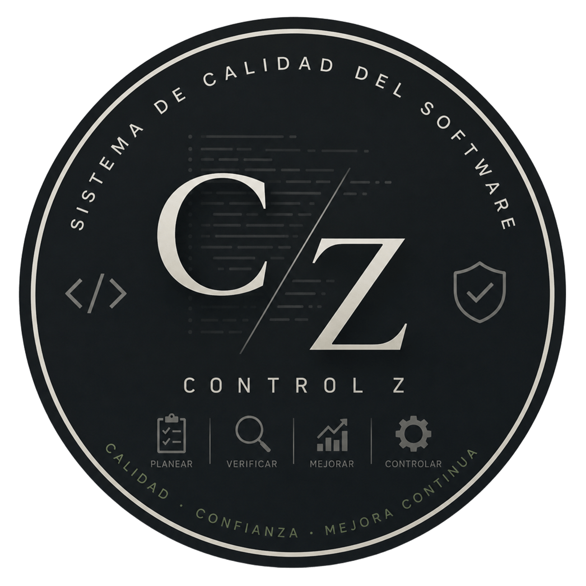

Pruebas unitarias
Comprueban una unidad pequeña (función, método o clase) de forma aislada. Suelen ser rápidas y las ejecuta el equipo de desarrollo.
Ejemplo verificar que calcularTotal() aplique el descuento correcto con varios valores.

CONTROL ZSISTEMA DE GESTIÓN Y CALIDAD DE SOFTWARELas pruebas aportan evidencia sobre el comportamiento del producto. Las herramientas ayudan a organizar esa evidencia, registrar defectos y sostener la calidad a lo largo del desarrollo.
Distintas pruebas responden preguntas distintas; se combinan para detectar problemas temprano y validar el producto completo.
Comprueban una unidad pequeña (función, método o clase) de forma aislada. Suelen ser rápidas y las ejecuta el equipo de desarrollo.
Ejemplo verificar que calcularTotal() aplique el descuento correcto con varios valores.
Comprueban que dos o más componentes colaboren correctamente: servicios, módulos, base de datos o APIs.
Ejemplo confirmar que al registrar una compra se guarde el pedido y se actualice el inventario.
Evalúan el producto integrado de punta a punta frente a requisitos funcionales y no funcionales, en un entorno representativo.
Ejemplo completar una compra desde el inicio de sesión hasta la confirmación del pago.
Diseña pruebas observando lo que el sistema recibe y devuelve, sin depender de su estructura interna. Sirve para verificar requisitos desde la perspectiva de uso.
Ejemplo probar límites de edad permitida en un formulario (17, 18 y 19 años) y comprobar aceptación o rechazo.
Usa el conocimiento del código para cubrir instrucciones, ramas y caminos relevantes. Ayuda a encontrar lógica no ejercitada por las pruebas.
Ejemplo cubrir ambas ramas de una condición que calcula envío gratis si el total supera un umbral.
No. Caja negra y caja blanca son técnicas complementarias; pueden aplicarse en distintos niveles. Una prueba unitaria, por ejemplo, puede diseñarse con conocimiento interno y comprobar resultados observables.
Elegí una categoría para explorar ejemplos representativos y el problema que ayudan a resolver.
Se muestran 9 herramientas.
Registra defectos, asigna responsables y permite seguir su estado y prioridad dentro del trabajo del equipo.
Gestión de proyectos de código abierto con seguimiento de incidencias, versiones y actividad.
Vincula errores y tareas con repositorios, conversaciones, etiquetas y cambios de código.
Organiza planes, casos y ejecuciones de prueba, y resume resultados para el equipo.
Permite administrar casos, planes y ciclos de prueba en una plataforma abierta.
Centraliza casos y ejecuciones manuales o automatizadas, con informes del avance.
Detecta patrones problemáticos en JavaScript y ayuda a mantener reglas consistentes.
Analiza código para señalar errores, vulnerabilidades y deuda técnica.
Revisa hojas de estilo, detecta errores y aplica convenciones CSS compartidas.
No hay herramientas en esta categoría.
La herramienta no garantiza calidad por sí sola: hacen falta criterios claros, casos bien diseñados y revisión de resultados.